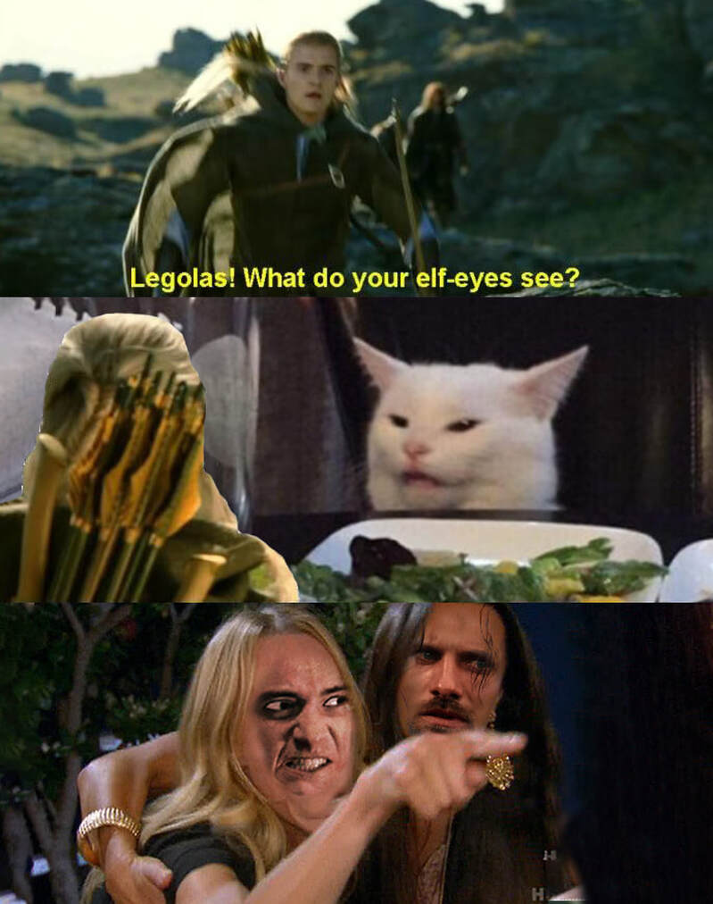

MEME MASHUP
The goal of the Meme Mashup mashup project was to blend together two existing memes, take their meanings and have them both come together and form something new and meaningful.
This mashup of memes was created using Photoshop, combining elements from both these memes. In a sense, I guess the altered meaning with both memes combined shows the amount of hatred or frustration Legolas has towards cats.
